“ワークステーション”というのは、 複数の利用者が情報を共有しながら並行して仕事を進めることのできる 機能を持ったコンピュータです。 以前は一つの大型コンピュータを共同で利用するための 端末装置をこう呼んでいましたが、 現在は端末装置自体が高い計算能力を持つようになったので、 ほとんどの仕事は端末装置側で行い、 端末装置間で情報を共有するためにそれらを通信回線で 相互に接続するという方式が主流になっています。
また、この部屋のように、 同一構内にある複数のコンピュータを通信回線で結んだ コンピュータネットワークのことを、 ローカルエリアネットワーク (LAN) と呼びます。 この部屋のローカルエリアネットワークは インターネットに接続されています。
UNIX というのは、 Windows 95 や MacOS などと同様、 オペレーティングシステム (OS)の一つです。 UNIX が Windows 95 や MacOS と異なるところは、 それが特定のコンピュータの OS につけられた名前ではないという点です。 O2 のオペレーティングシステムは、正式には IRIX と言います。 これは UNIX 系の OS の一つです。
O2 を作っているシリコングラフィックスという会社は、 その名の通りコンピュータグラフィックスに重点を置いた コンピュータメーカーです（現在はスーパーコンピュータメーカーとして有名な Cray 社と合併して“シリコングラフィックス・クレイ”という会社に なっています）。O2 もコンピュータグラフィックスの機能が強化されているため、 “グラフィックスワークステーション”と呼ばれます。
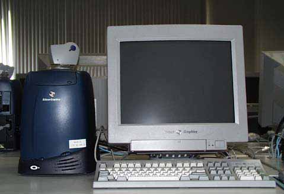
O2 の本体は左の青い（昔のトースターが大きくなったような）箱です。 本体の上にはビデオカメラ（マイク内蔵）が置いてあります。 その右にディスプレイ（モニタ）、 手前にキーボードがあります。 写真では隠れていますが、 キーボードの右にマウスが置いてあります。 これでワンセットです。 キーボードは PC のものと同じ（但し英語キーボード）ですが、 マウスのボタンは３つあります。
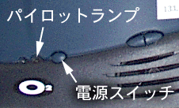
電源スイッチは本体正面の色の境目にあります。 一回押すだけで電源が入ると思います。 電源スイッチの右側にあるのは音量（ボリューム）です。
電源スイッチを押すと、
パイロットランプが一瞬赤くなり、
それからオレンジ色に変わります。
しばらくすると、琴のような音がします。
起動処理（しばらくかかります）のあと、
O2 が正常に起動できれば、
パイロットランプは緑色になります。
もし、緑色に変わらず、
いつまで待っても起動しなければ、
指導教官やや学科事務室に連絡してください。
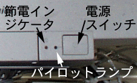
ディスプレイの電源は本体とは連動していないので、 この電源スイッチも入れてください。 なお、 パイロットランプ（緑色）が消え、 節電インジケータ（オレンジ色）が点灯しているときは、 このディスプレイは節電モードになっています。 本体が起動しているなら、 マウスを動かしてみてください。 本体が起動していないなら、 本体の電源を入れてください。起動に成功すると、 下のような画面が現れます。
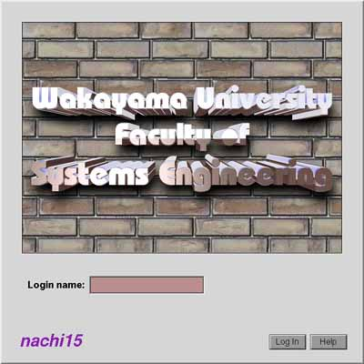
- 文字キー
- アルファベットやアルファベットの上にある数字／記号のキーは、 そのキーをタイプすればその文字が現れます。
- スペースバー
- アルファベットのキーの下にある横に長いキーで、 空白文字が現れます。 単語の区切りなどに使います。
- Backspace
- バックスペースキーと言います。 直前にタイプした文字を１文字消します。
- Enter
- 改行キーとも言います。 キーボードによっては Return と書かれているものもあります。 改行するときに使いますが、 コンピュータにおいて「改行する」とは、 しばしばそれまでタイプした文字をコンピュータ側に送る（入力する）ことを 意味します。
- Shift
- シフトキーと言います。 アルファベットの大文字をタイプするには、 このキーを押しながらアルファベットのキーをタイプしてください。 このキーを押しながら数字キーをタイプすると、 そのキーの上に書かれている記号が出力されます。
- Ctrl
- コントロールキーと言います。 このキーを押しながら文字キーをタイプすると、 制御文字（コントロールキャラクタ）がコンピュータに送られます。
- Caps Lock
- このキーを一度押すと、 キーボードの右側にある 'A' と書かれたところのランプが点灯し、 シフトキーを押さない状態で大文字のアルファベットがタイプできます。 もう一度押すと元に戻ります。
- Num Lock
- このキーを一度押すと、 キーボードの右側にある '1' と書かれたところのランプが点灯し、 テンキー（キーボードの右側にある数字キー）で数字がタイプできるようになります。 もう一度押すと元に戻ります。
キーボードにはこのほかに矢印キーや種々のファンクションキーがありますが、 それらに付いては適宜解説します。
みなさんのシステム情報学センターの利用承認書に書かれている ログイン名とパスワードをここに入れます。 この６階の演習室はシステム情報学センターとは独立しているのですが、 みなさんのログイン名とパスワードの初期値は一致させています。
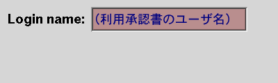
ここにログイン名を入力します。 承認書に書かれているログイン名を、 キーボードをタイプして入力してください。 打ち間違えたら、 [Backspace]キーをタイプすれば１文字消すことができます。 全部打ち終えたら [Enter] キーをタイプしてください。 すると、その下に次のような項目が現れます。
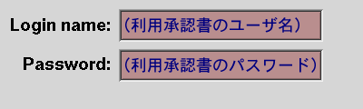
ここには承認書に書かれているパスワードをキーボードをタイプして 入力してください。他人に見られないようにするために、 タイプしたパスワードは画面には表示されません。 大文字をタイプするには、 [Shift]キーを押しながらその文字をタイプしてください。
| ログイン名やパスワードを打ち間違えたとき |
|---|
|
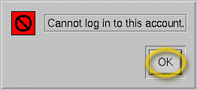 ログイン名やパスワードを間違えると、 右のような表示が現れます。 この時はマウスを動かしてディスプレ以上の矢印を OK のところに移動し、 マウスの左ボタンを押してください。 |
| 異なるマシンに初めてログインするとき |
|---|
|
以前ログインしたマシンと異なるマシンに初めてログインするとき、
次のような表示が現れることがあります。
通常はマウスを動かして OK のところに矢印を移動し、
マウスの左ボタンを押して下さい。
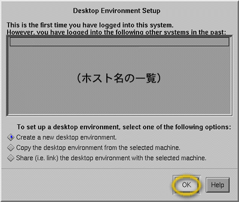
|
ログインに成功すると、 次のような画面が現れます。
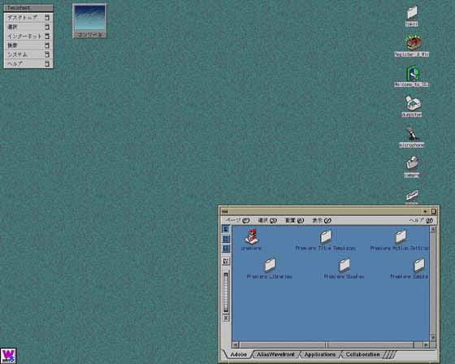
このボタンの押し方には、いくつかのパターンがあります。
- クリック
- ボタンを“カチッ”と１回押してすぐに離します。
- ダブルクリック
- ボタンを“カチカチッ”と２回続けて（0.5 秒以内？）クリックします。
- ドラッグ
- マウスのボタンを押しながら、マウスを動かします。 たいてい、マウスカーソルの位置にある“何か”が、 それに引きずられて移動します。
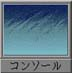
たぶん、画面の左上に、右のような図形が描かれていると思います。 このように、シンボル化されたオブジェクト（対象）を“アイコン”と言います。 では、試しにこのアイコンをマウスの左ボタンでクリックしてみてください。 すると、このアイコンが「開いて」下のような“ウィンドウ”が現れると思います。 以降、特に断らない限り、「クリックする」と指示された時には マウスの左ボタンを使ってください。
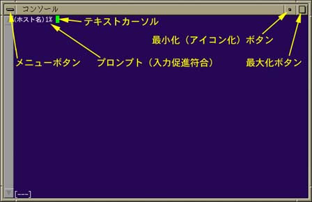
最小化ボタンをクリックすると、 このウィンドウは元のアイコンに戻ります。 最大化ボタンをクリックすると、 このウィンドウは拡大可能な最大サイズまで大きくなります。 もう一度クリックすると元に戻ります。
マウスを開いたコンソールのウィンドウに移動し、 そこでキーボードから typing とタイプし、 その後 [Enter] キーを押してください。
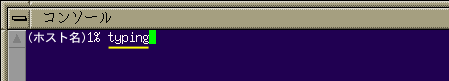
すると次のような表示が現れますから、 表示にしたがって練習を進めてください。
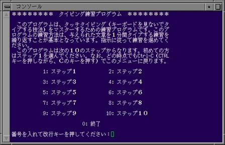
毎回１ステップずつ、１０～１５分くらい練習します。 なお、途中「５回繰り返せ」「３回繰り返せ」という指示があると思いますが、 時間がないので１回練習したらそのまま次に進んでください。 「次に進みますか」という問い合わせは次のステップに移行する時に出るので、 とりあえずそこまで進んでください。
最後にタイプ能力のテストを行いますから、 うまくできない人は空き時間を使って練習しておいてください。
新しく設定するパスワードは、
このシステムではパスワードを設定（変更）するのに、 yppasswd というコマンド（命令）を使います。 上の typing と同様、 コンソールのウィンドウで yppasswd とタイプして、 [Enter] をタイプしてください。
（ホスト名）2% yppasswd[Enter] Changing NIS password for あなたのログイン名 on サーバホスト名. Old password:******* （←現在のパスワードを入力） New password:******* （←新しいパスワードを入力） Retype new password:******* （←確認のため再度入力） NIS passwd changed on NIS サーバホスト名. |
すると、今使っているパスワードを聞いた後に、 新しいパスワードを聞いてきます。 これも、タイプしているパスワードは画面には表示されません。 新しいパスワードは確認のために２回聞いてきますので、 同じものをタイプしてください。
すでにお話しした通り、 あなたの目の前にあるコンピュータは、 インターネットを通じて世界中のコンピュータにアクセス可能です。 とうことは、世界中からも、 あなたの目の前にあるコンピュータへのアクセスも可能なわけです。 で、悲しいことに、その世界中にいる人が、 すべて善良な人であるとは限りません。 パスワードは、 あなたのデータがあなた自身に帰属することを保証するための鍵であると同時に、 そういう悪意からこのシステム（大学全体を含めて）を守るための鍵でもあります。 だから、その鍵の管理は徹底して行ってください。
画面の左上隅に Toolchest というウィンドウがあります。 この“デスクトップ”をクリックしてください。 次に、現れたメニューの一番下にある“ログアウト”をクリックしてください。 すると、下の中央の図のようなウィンドウが現れます。 この「はい」のボタンをクリックすれば、 ログアウト完了です。
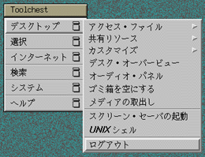 | 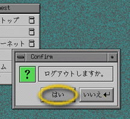 | 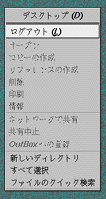 |
なお、画面の背景の部分（デスクトップ）で、 マウスの右ボタンを押した時に現れるメニューの中の “ログアウト"を選択してもかまいません。
あとは、本体とディスプレイの電源スイッチを押して、 電源を切ってから退室してください。